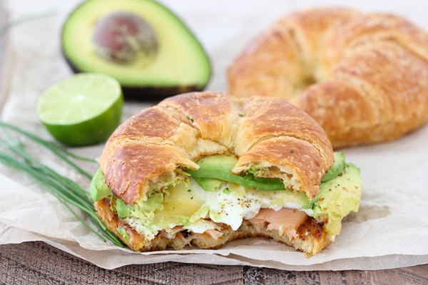

Smoked Salmon and Avocado Egg Sandwich

Description
A flavorful and scrumptious, out of this world breakfast!
Ingredients
| Ingredient |
Quantity |
| Croissant |
2 pcs |
| Butter |
1 tbsp. |
| Egg |
4 pcs |
| Salt, black pepper |
to taste |
| Cheese |
2-4 slcs |
| Smoked salmon |
100 gm |
| Avocado |
1 pcs |
| Lime |
1 pcs |
| Fresh chives |
1/2 tbsp. |
Directions
- Slice the croissants in half and toast them. Preheat the oven to 260 degrees Celsius and toast it until golden, just half a minute or so.
- Melt the butter in a skillet and crack in the eggs, seasoning with salt and pepper. Cook on low heat until the eggs are cooked the way you like them. Towards the very end, place the cheese on top of the eggs so that it starts to melt
- Place half of the smoked salmon on one side of each of the toasted croissants. Slice the avocado and place half of the avocado slices on the other side of each of the croissants. Squeeze the juice of one lime over the avocado slices.
- Place the cooked eggs on top of the smoked salmon and sprinkle generously with the minced chives.
- Put both of the croissant halves together and enjoy this scrumptious sandwich!
Find More Original Recipes!